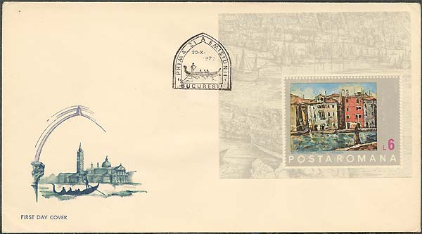

Venice in the Romanian Painting
Gheorghe Petrascu
Gheorghe Petrascu was born in Tecuci, 1872 and he died in Bucuresti, 1949. After studying between 1893 and 1898 at the Fine Arts School in Bucharest with Professor painter G.D. Mirea, he went to Paris to enter the Julian Academy. There he spent four years (1898-1902) working at W. A. Bouguereau's studio. Summers he would be back in the country, to work at the Agapia monastery and Nicoresti. Being a high traveller as a young artist and then as a grown up, he took long trips abroad to visit art galleries and monuments in London, the Hague, Amsterdam, Berlin, Munich, Vienna, Egypt, Greece, Italy, Spain etc. Starting with 1904 he joined the "Artistic Youth" exhibitions, the official salons, the "Art " Association exhibitions. Also his works were on show at the Paris International Exhibition (1937) where he won the Great Prize, the Venice Biennial (1924, 1936, 1938, 1940, 1942, 1946, and posthumously, in 1960).

With all that travels could have brought to his cultural experience, the artist's profound attachment to the cultural life of his country was an undeniable reality, to be seen in his paintings' originality.
One loves Petrascu's painting because, in rejecting any sweetening or lyrical overflow, it proclaims the truth of the visible world. His pictures herald the concrete world, the world that our senses are in touch with. His compositions, no matter if they are landscapes, still life or portraits, are done in firm brushstrokes, with full care taken of a balance almost turned to a balance of stability, seen as a longing for permanence. It was in the thirties when he meant his
colors purposely and obviously for showing the materiality and palpability of the world within his reach.
|
|
 |

Reminding of the pottery exterior, his compositions plenitude, conspicuousness and brightness are similar to those of the popular silver ware, thus approaching reality and the Romanian folk art traditions. As the style of his painting personalizes, colour intentions do clarify. The motifs of the painting get substance and the pictures become more obvious, natural and palpable. He captures the same vigorous images, to artistically transpose and make them last, even when traveling through the country or through strange places. Among his travel-inspired pictures here are1937; Toledo - Poarta soarelui/Toledo- The Gate of the Sun, 1929; Toledo - Poarta San Martin/Toledo- The San Martin Gate, 1929; Peisaj din Chioggia/A View at Chioggia, 1934, or the splendid pictures with Venetian sights, which distinguish the painter among those who painted the famous town. Petrascu was one of the most representative artists of the inter-war time, a most productive and remarkable time of the Romanian culture.

A land-given strength, a moderate temper and an optimistic view formed his talent. He would not go into rapture before the universe, but would be able to know and keep good memory of the reality in front of his eyes. These stamps, together with the stamp Sc. 2350 (not shown), commemorate the 100th birth anniversary of the artist.

The nice stamps presented above were issued by the Romanian post on October 20, 1972, under the name "Save Venice". For more information about the components of this set please point to the individual images with the mouse index.
| Published:
05/18/2002. Revised: 05/19/02. Copyright © 2002 by Victor Manta, Switzerland. All rights reserved worldwide. |